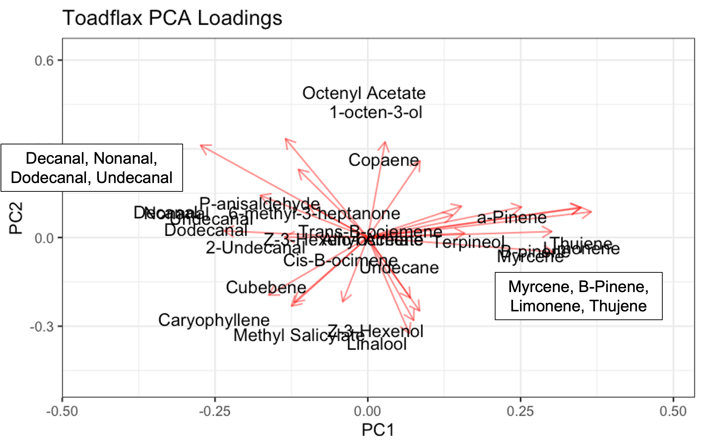
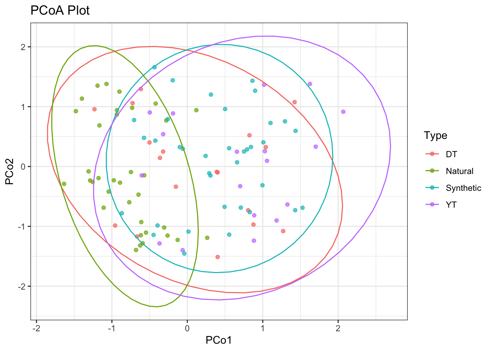

-1.png)
Toadflax Analysis
Methods
Boxpot and multivariate statistical analyses were conducted in R (R Core Team 2024) using RStudio (version 4.2.1). We employed Principal Compoenent Analysis (PCA), Permutational Multivariate ANOVA (PERMANOVA), and Permutational Analysis of Multivariate Dispersion (PERMDISP). The data was first transformed using a center log-ratio (CLR) transformation, a technique commonly used when analyzing multivariate compositional data (Brückner and Heethoff 2017). VOC compositions were compared between samples and types using a permutational multivariate analysis of variance (PERMANOVA, Canberra distance, 999 iterations) tests implemented in the vegan package (v 2.6-4) (Oksanen et al. 2011). This technique uses permutation testing to generate many different rearrangements of the data to assess if the observed differences are statistically significant (Anderson 2017). Data were visualized using ggplot2 (Wickham 2016). The compounds used in this analysis were selected based on consistency of presence across samples , as well as overall quality of mass spectroscopy output.
I’m going to briefly analyze the data in two different formats.
- Type: groupings of YT, DT, Natural, and Synthetic
- Plant: groupings of each plant type - D6, Y6, D6Y6, Y6D6, HBR, RAD
Overall, the data is quite good. I think a little bit of pairing down of the number of compounds we are looking at could be helpful.
Raw Boxplot Comparisons
Organized by Type
Type: This section has data organized by the four grouping variables - YT, DT, Natural, and Synthetic.
Organized by Plant
Plant: This section has data organized by the six plant types - D6, Y6, D6Y6, Y6D6, HBR, and RAD.
-1.png)
Principal Component Analysis (PCA)
Principal Component Analysis (PCA) is a statistical method used to simplify complex datasets by identifying patterns and relationships among variables. It transforms the original data into a new set of variables called principal components, which capture the most important information in the data. These components help visualize and understand the main sources of variation among samples or observations. In this study, PCA was used to analyze the variability in volatile organic compound (VOC) compositions across samples, allowing researchers to explore and interpret the data more easily.
Organized by Type
All Data
We’re going to start by comparing all four plant categories. Our first look at our PCA results is in the form of a scores plot. This shows us how our data is grouped by type.
{kind=link}
Next, we can look at our loadings and see where each compound is pushing the differences in our PCs.

{kind=link}

{kind=link}
Finally, we can overlay the two plots to get an idea of how our data groups around our compounds. I found this plot a little bit busy, which is why I broke it down in the above two figures.
Grouping our compounds by family (i.e. terpenes, aldehydes, etc.) could provide a little bit of more context.
Variable Category Selection
I will create several PCA plots by filtering out different plant categories. There’s a crucial distinction to be made here. In one set of plots, I’ll filter out the specified category after running the PCA on the entire data set. This will result in plots with ellipses and points identical to those seen in the plots of the entire data set, just with the non-specified data removed. Additionally, I’ll show plots that display PCA results from data filtered prior to running the PCA model. In these plots, points and ellipses have the potential to appear different from the previous display method.
I’ve also created plots showing just the ellipses for the specified groups, while leaving the rest of the data set grey. It should hopefully all become clearer as we proceed through each section.
In my opinion, using a PCA plot to represent a data set and then filtering the data after running the PCA model might not accurately depict the relationship between the variables. The placement of points on a PCA plot is influenced by the entire data set, so removing some data afterward could distort the representation and make it less meaningful.
As a reference, I’m going to show the plot from all varaibles and data on the right side.
Let’s start by removing the natural hybrids from our PCA and view the results.
Compare: DT, YT, Synthetic
Post-PCA Model Filter

 - DT, YT, Synthetic.png){kind=link}
{kind=link}
Pre-PCA Model Filter

 - DT, YT, Synthetic.png){kind=link}
Compare: Synthetic and Natural
Post-PCA Model Filter

 - Hybrids.png){kind=link}
I’ve also plotted just the two hybrid plant categories but included the data points from the rest of the samples.

 - Hybrids with entire.png){kind=link}
Pre-PCA Model Filter

 - Hybrids.png){kind=link}
After running all of these plots, it looks to me like the largest differences are between the PRE and Post PCA Model plots when we removed the Natural category. Looking at the hybrid comparison, it looks like the plots are basically the same, just flipped on an axis or two.
Organized by Plant
All Data
{kind=link}
Variable Plant Selection
Compare: HBR and RAD
Post-PCA Model Filter

.png){kind=link}
Pre-PCA Model Filter

.png){kind=link}
PERMANOVA
Organized by Type
As stated above, PERMANOVA uses permutation testing to generate many different rearrangements of the data to assess if the observed differences are statistically significant (Anderson 2017). It is useful when considering non-normal multivariate data like our Toadflax data set.
D6, Y6, Synthetic, Natural
| Df | SumOfSqs | R2 | F | Pr(>F) | |
|---|---|---|---|---|---|
| meta_data$type | 3 | 1.173032 | 0.2591062 | 12.00709 | 0.001 |
| Residual | 103 | 3.354192 | 0.7408938 | NA | NA |
| Total | 106 | 4.527223 | 1.0000000 | NA | NA |
Our results show strong evidence (p-val = 0.001) of a difference between our four plant types (YT, DT, Synthetic, and Natural).
Let’s check for a difference between our synthetic and natural plant types.
Synthetic & Natural
| Df | SumOfSqs | R2 | F | Pr(>F) | |
|---|---|---|---|---|---|
| meta_data$type | 1 | 0.4267748 | 0.1616969 | 13.30914 | 0.001 |
| Residual | 69 | 2.2125751 | 0.8383031 | NA | NA |
| Total | 70 | 2.6393499 | 1.0000000 | NA | NA |
Our results show strong evidence (p-val = 0.001) of a difference between Natural and Synthetic plant types.
Organized by Plant
Let’s say, for example, that we want to see if there is a difference in the VOC profile between the D6Y6 and Y6D6 plants. We can run a PERMANOVA to assess for a significant difference.
| Df | SumOfSqs | R2 | F | Pr(>F) | |
|---|---|---|---|---|---|
| meta_data$plant | 1 | 0.1309064 | 0.0574618 | 2.072809 | 0.08 |
| Residual | 34 | 2.1472404 | 0.9425382 | NA | NA |
| Total | 35 | 2.2781468 | 1.0000000 | NA | NA |
Our results show no evidence (p-val = 0.08) of a difference between volatile profiles between Y6D6 and D6Y6 plants.
PERMDISP & PCoA
Permutational Analysis of Multivariate Dispersions, or PERMDISP, is a multivariate statistic used to assess differences in dispersion (variation) among groups or treatments. This method is particularly useful when dealing with multivariate data where there are multiple variables measured on each sample or observation.
Principal Coordinates Analysis (PCoA), also known as Classical Multidimensional Scaling (MDS), is a multivariate statistical technique used for exploring and visualizing patterns of similarity or dissimilarity in data. PCoA is closely related to Principal Component Analysis (PCA), but whereas PCA operates on the covariance matrix of the data, PCoA works directly on a distance or dissimilarity matrix.
I ran a PERMDISP on our entire data set.
Homogeneity of multivariate dispersions
Call: betadisper(d = dist, group = data.clr$type)
No. of Positive Eigenvalues: 26
No. of Negative Eigenvalues: 0
Average distance to median:
DT Natural Synthetic YT
6.572 6.623 6.699 7.161
Eigenvalues for PCoA axes:
(Showing 8 of 26 eigenvalues)
PCoA1 PCoA2 PCoA3 PCoA4 PCoA5 PCoA6 PCoA7 PCoA8
1266.4 922.1 671.8 519.2 406.3 319.9 292.6 258.6 We found no significant difference (pval = 0.5548198 ) in multivariate dispersion among groups.
Basically what all of the PERMDISP and PCoA results mean is that we are not seeing any significant different (0.5548198) in the dispersion within each of our groups when we compare them to one another. We are seeing a very large p-value from our PERMDISP results and a considerable amount of overlap when looking at the PCoA plot.
This means that we don’t need to consider differences in broad dispersional differences between our plant types.
References
Anderson, Marti J. 2017. “Permutational Multivariate Analysis of Variance (PERMANOVA).” In Wiley StatsRef: Statistics Reference Online, 1–15. Chichester, UK: John Wiley & Sons, Ltd.
Brückner, Adrien, and Michael Heethoff. 2017. “A Chemo-Ecologists’ Practical Guide to Compositional Data Analysis.” Chemoecology 27: 33–46. https://doi.org/10.1007/s00049-016-0227-8.
Oksanen, Jari, L. Gavin Simpson, F. Guillaume Blanchet, and Roeland Kindt. 2011. “Ordination Methods, Diversity Analysis and Other Functions for Community and Vegetation Ecologists.”
Wickham, Hadley. 2016. Ggplot2: Elegant Graphics for Data Analysis. Springer-Verlag New York. https://ggplot2.tidyverse.org.